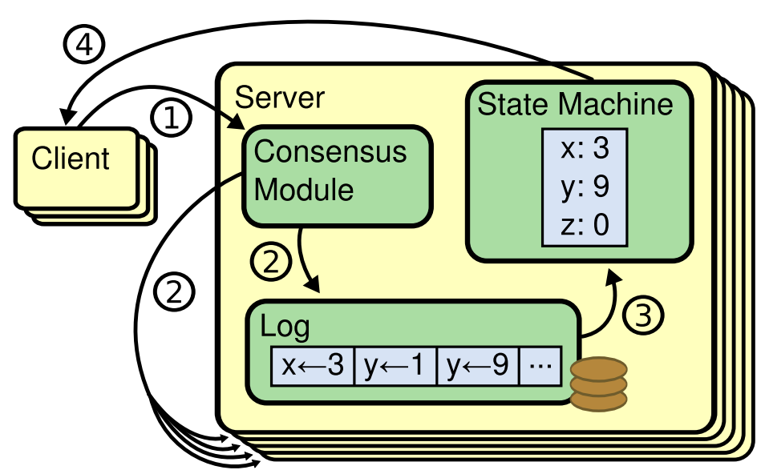
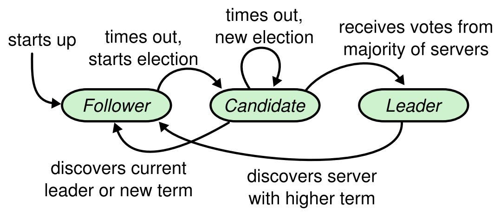
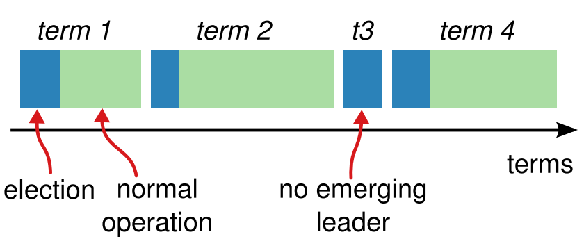
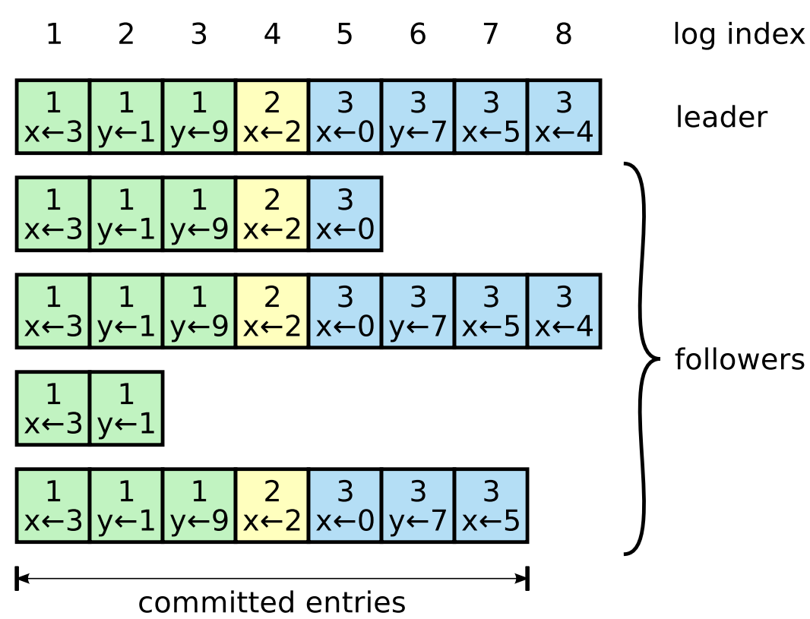
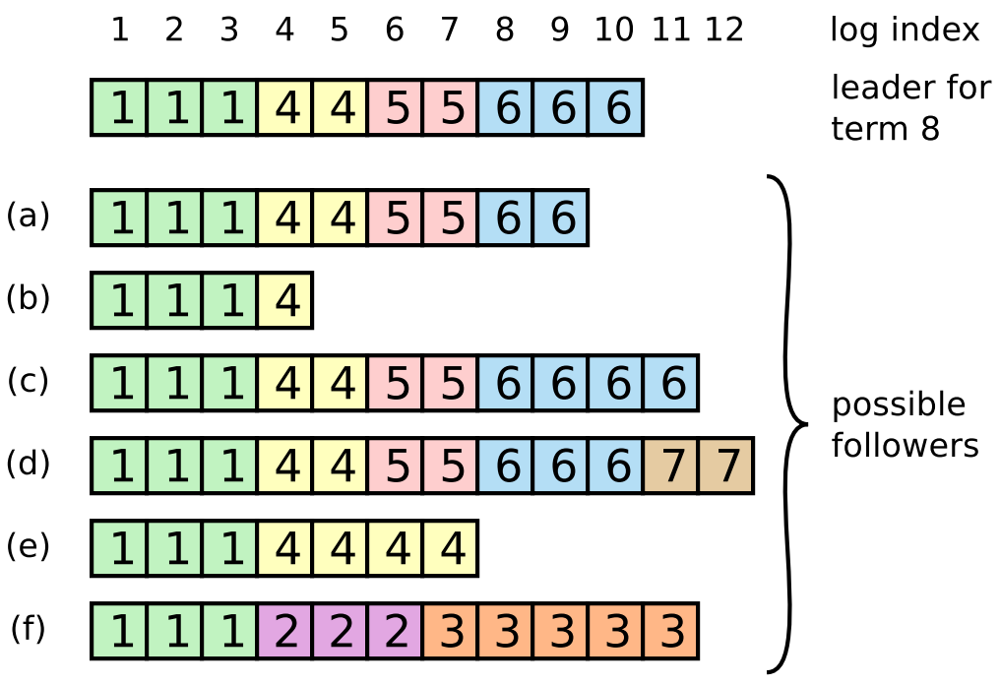

摘要
Raft是一个用于管理replicated log的共识算法（consensus algorithm）。Raft与Paxos一样高效。相比Paxos，Raft更加易懂，且为应用到实际系统当中提供了更好的基础。为了提高可理解性，Raft将共识算法的几个关键元素分开，例如leader election、log replication和safety，并且它通过执行更强的一致性减少了需要考虑的状态数目。
引入
共识算法能够让一群机器作为一个团结一致的群体运行，且能够容忍其中部分成员的失效。因此，共识算法在建立可靠的大规模软件系统当中发挥了重要作用。目前，几乎所有的共识算法都是基于Paxos，或受其影响的。但Paxos有两个缺点：
- 难以理解。
- 不能为构建实际系统提供一个很好的基础。为了应用到实际系统，需要进行复杂的更改。
Raft的提出就是为了改善这两个问题。Raft有以下几个新的特征：
- Strong leader：相比其他共识算法，Raft使用了一种更强的领导形式。例如，log entries只从leader传输到其他服务器。这简化了replicated log的管理，并且使得Raft更易懂。
- Leader election：Raft使用了随机的计时器来选举领导。这是在其他共识算法已有的心跳机制的基础上进行的小规模的修改，但却简单迅速地解决了冲突。
- Membership changes：Raft再更改集群中服务器集合的时候采用了新的joint consensus方法，两种不同配置的大多数服务器在转换过程中会重叠。这使得集群在配置更改的过程中仍然能正常运行。
Replicated state machines
共识算法被应用的典型场景是Replicated state machines，其中，一群机器上的状态机计算相同状态的副本，并且在部分服务器失效的情况下也能继续运行。Replicated state machines被用于解决分布式系统中的容错问题。
如下图，Replicated state machines通常使用replicated log实现。每个服务器存储一个包含一系列指令的日志，状态机顺序执行这些指令。所有状态机按同样的顺序存储相同的指令，得到相同的输出序列。
实际系统中的共识算法通常具有下列性质：
- 在非拜占庭条件之下保证安全（不返回错误的结果）。非拜占庭条件指的是可以出现故障，但信息不能被伪造，例如网络延迟、丢包、重复、失序。与之相对应的是信息被伪造的拜占庭错误。
- 当大多数服务器可用且能够互相发送信息时，集群就是可用的。例如，拥有5个服务器的典型集群能够容忍2个服务器的失效。
- 不依赖于计时器来保证日志的一致性，错误的时钟和极端的消息延迟在最坏情况下也只会造成可用性问题，而不会影响一致性。
- 通常情况下，一旦集群中的大多数服务器对一轮RPC完成一次响应，集群就完成了一条指令的执行；少数慢速服务器不会影响系统的整体性能。
Raft算法
Raft将共识问题分解为下列几个相对独立的子问题：
- Leader election：当现有的leader失效时，一个新的leader被选出。
- Log replication：leader从客户端接收log entries，在集群中复制，保证其他日志与之一致。
- Safety：Raft在任何时候保证下列每一条性质。
- Election Safety：在一个给定的term当中，至多一个leader被选出。
- Leader Append-Only：一个leader从不覆写或删除其日志中的entries；leader只附加新的entries。
- Log Matching：如果两份日志包含一条拥有相同index和term的entry，那么这两份日志中所有给定index的entry都是相同的。
- Leader Completeness：如果一个log entry在一个给定的term当中提交，那么这个entry将会在所有term更高的leaders的日志当中出现。
- State Machine Safety：如果一个服务器将一个给定index的log entry应用到它的状态机上，那么其他服务器将永远不会在相同的index上应用一个不同的log entry。
Raft基本定义
服务器的三种状态
一个Raft集群由若干个服务器组成。在任意给定的时刻，每个服务器处于下列三种状态中的一种：leader、follower、candidate。在正常运行时，仅有一个leader，其他服务器均为follower。follower都是被动的：它们不会自己发送请求，只会响应来自leader和candidate的请求。leader处理所有的客户端请求（若客户端联系follower，follower将请求重定向到leader）。candidate用于选举新的leader。
上述三个状态的状态转移图如下：
时间划分：term
Raft将时间划分为任意长度的terms，用连续的整数表示。每个term起始于选举，此时有一个或多个candidate尝试成为leader。如果某一个candidate赢得了选举，在这个term的剩余时间当中它将作为集群唯一的leader。如果选举不出leader，例如两个candidate同票，那么这个term直接结束，进入下一个term，开始一场新的选举。
term在Raft中充当逻辑时钟的角色，使得服务器能够检测过时的信息，例如过时的leader。每个服务器存储一个current term数值，在每次通信时发送自己的current term。当某个服务器接收到一个包含比自己大的current term的请求时，它会更新current term为这个更大的值。如果这个服务器是candidate或者leader，他会返回follower状态。反之，当服务器接收到一个包含过时的、比自己小的term的请求时，它会拒绝这个请求。
RPC类型
Raft服务器之间使用RPC进行通信。基本的共识算法只需要两种类型的RPC：
- RequestVote RPC，由candidate初始化，用于请求其他服务器投票。
- AppendEntries RPC，由leader初始化，用于复制log entry和提供心跳信号。
Raft还加入了第三种类型的RPC，用于在服务器之间传输snapshot。
如果服务器没有及时收到响应，它们会重试RPC。服务器以并行的方式处理RPC。
Leader election
Raft使用心跳机制来触发leader election。服务器启动时为follower状态，且只要它收到来自leader或candidate的有效的RPC，它就会维持follower状态。leader会定期发送心跳信号（即空的AppendEntries RPC）给所有follower来维持它的权威。如果一个follower在一段叫做election timeout的时间之后还没有收到通信，则它认为没有可见的leader，从而开始一次新的选举。
为了开始一次选举，一个follower将它的current term加一，然后进入candidate状态。它会投票给自己，然后并行地在集群中的其他服务器上执行RequestVote RPC。
candidate维持其状态，直到下列三者之一发生：
- 它赢得了选举。当candidate收到整个集群（full cluster）中大多数服务器的相同term的投票时，它将赢得选举成为leader。在给定的term当中，服务器根据FCFS策略投票给第一个candidate。
- 另一个服务器赢得选举，成为leader。在等待投票的过程中，如果candidate收到AppendEntries RPC，且发送者的term号大于等于服务器自身的term，则说明另一个服务器已经成为leader。本服务器转为follower。
- 一段时间后，没有服务器赢得选举。此时每个服务器都会超时，并且开始一场新的选举。为避免这种情况无穷无尽地出现，Raft使用随机的election timeout，即从一个给定的间隔中随机选取（如150-300ms）。这使得在大多数情况下只有一个服务器超时，并且它在其他服务器超时之前就已经成为leader并发送了心跳信号。
Log replication
leader处理客户端请求。每条客户端请求包含一条将被replicated state machines执行的指令。leader将这条指令以一个新的entry的形式添加到日志末尾，然后对其他服务器并行地执行AppendEntries RPC，以复制这条entry。当entry被安全复制之后，leader对其自己的状态机应用这条entry，然后返回执行结果给客户端。如果由于follower服务器失效、运行速度过慢或网络丢包等原因导致log entry无法被复制到该follower上面，leader会无穷无尽地重试AppendEntries RPC，即使它已经回复了客户端的请求也是如此，直到所有的follower都存储了所有的log entry。
Log的形式如下图所示。
当一条log entry能够被安全地应用到leader的状态机上时，我们称之为一条被提交的entry。Raft保证被提交的entry是持久的，且最终会被应用于所有有效的状态机上。当创建这条entry的leader将其复制到大多数服务器上之后，这条entry就被提交。同时，leader的日志中所有之前的entry也会被一并提交，包括先前其他leader创建的entry。
leader持续追踪已被提交的最大index，并且在AppendEntries RPC中包含这个index。一旦一个follower得知某条log entry被提交，它就会将这条entry应用到自己的local状态机上。
Raft维持下列两条性质，共同构成了上述提到的Log Matching Property：
- 如果不同log当中的两条entry拥有相同的index和term，那么他们存储相同的指令。
- 如果不同log当中的两条entry拥有相同的index和term，那么这两个log之前的entry完全一样。
第一条性质的正确性来源于：leader至多创建一条给定index和term的entry，且entry不会在log中更改位置。第二条性质的正确性来源于AppendEntries的简单一致性检查。当发送AppendEntries RPC时，leader会包含上一个entry的index和term。如果follower没有在其日志中找到相同的index和term，它会拒绝新的entry的添加。
在正常运行的情况下，leader和follower的日志是一致的。但是leader的失效会导致不一致，因为旧的leader可能没有完成其日志中所有entry的复制。下图为几种可能的情况：
服务器的日志有可能缺失当前leader中的entry，也有可能拥有leader中没有的entry，或两者皆发生。且有可能横跨多个term。
在Raft当中，leader通过强制follower复制其日志的方式来处理不一致。这意味着follower中冲突的日志将会被leader对应的entry覆盖。为了达到一致性，leader必须找到两份日志当中最后一个相同的entry，删除follower日志中在此之后的entry，然后向follower其发送leader日志中在此之后的所有entry。leader对每一个follower维护一个nextIndex变量，表示leader将发送给follower的下一个entry的index。当服务器成为leader的时候，它会将所有nextIndex值初始化为其log的下一个号码。如果entry不一致，AppendEntries一致性检查会在下一个AppendEntries RPC中失败。在收到拒绝之后，leader将nextIndex减1，然后重试AppendEntries RPC，直至成功，然后再向后添加正确的entry。
一些问题
Q: Log的作用是什么？Log中存储的历史指令在什么时候需要用到？
Q: Log中存储term号的作用？
Q: 假如一个leader服务器的部分entry还没有被提交时，这个服务器就故障了，但故障时间很短，它马上又成为了leader。根据Leader Append-Only Rule，这个leader存储的未提交的错误entry不能被删除。请问这种情况有可能发生吗？
Q: 当一个leader故障时，如何保证新选出来的leader的log是正确的？
Q: entry什么时候被应用于follower的状态机上？还是说没有必要应用？